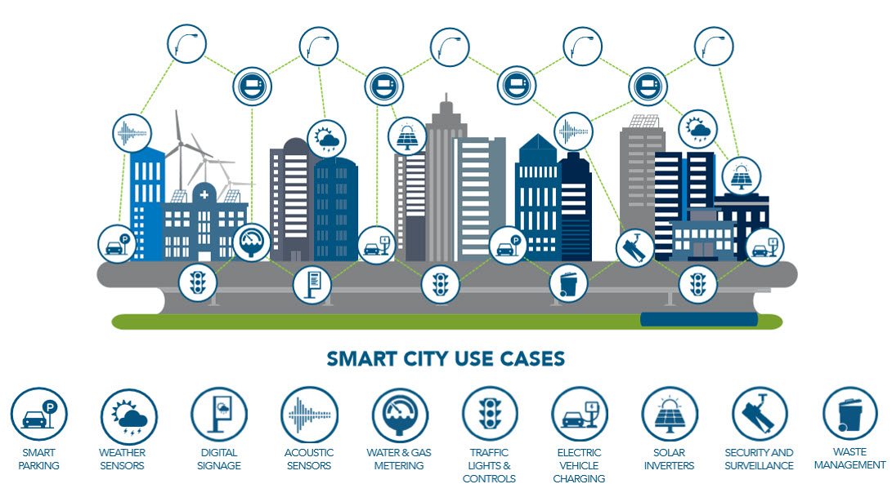
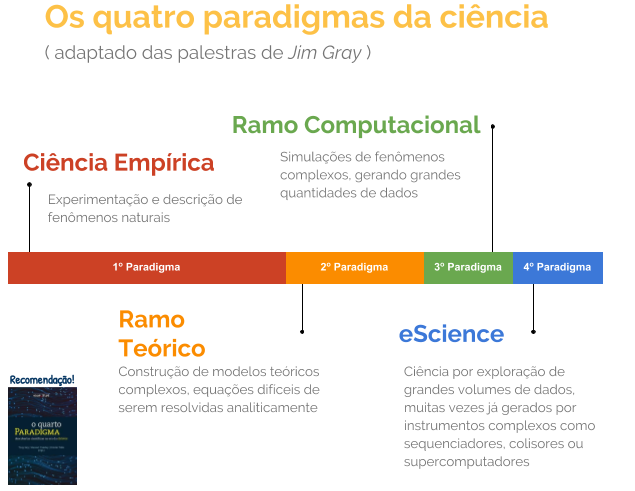
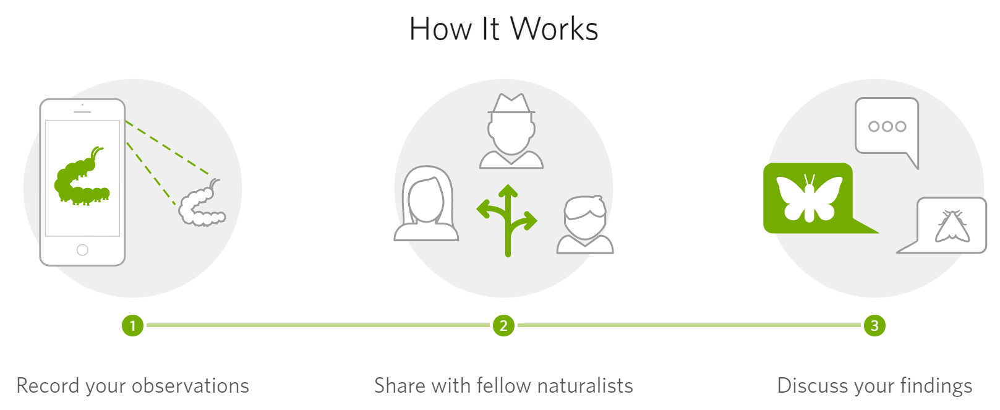
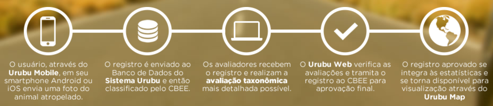

Um breve tour pela
Data Science
Pedro C. de Siracusa
pedrosiracusa @ gmail.com
Biólogo pela UnB | Mestrando no LNCC
Vivemos na era do
Big Data
Com grandes dados grandes desafios!
A complexidade em 4 V's
Volume
O tamanho do conjunto de dados: Como armazená-lo e processá-lo eficientemente?
Velocidade
A taxa com que dados são produzidos: Também precisam ser processados em tempo restrito
Variedade
A natureza dos dados: Diversidade de formatos e estruturas
Veracidade
A Qualidade dos dados: Dados errados são piores que ausentes!
Um mundo extremamente
conectado!
A "Internet das Coisas"
- Objetos físicos incorporados à web;
- Redes de sensores;
- Monitoramento e comunicação em tempo real;
- Um verdadeiro dilúvio de dados!
Cidades Inteligentes
Ciência intensiva em dados
e-science
Citizen Science: O cidadão coletando dados
INaturalist
Retirado do projeto INaturalist
Citizen Science: O cidadão coletando dados
Sistema Urubu
Ecologia de Estradas: Atropelamento em Rodovias
Um dilúvio de dados!
Mas como usá-los de forma eficiente para tomar decisões?
Mas afinal o que é
Data Science?
"Data Science is like teenage sex: Everyone talks about it, nobody really knows how to do it, everyone thinks everyone else is doing it, so everyone claims they are doing it."
Entendendo Data Science

Mas como isso é diferente da ciência que todos nós já fazemos?

Por Drew Conway
O perfil do
Cientista de Dados
Curiosidade, Criticidade e Criatividade
Autonomia para aprender
Interdisciplinaridade
Habilidades em comunicação
Trabalho em equipe
Mas quem tem todas estas habilidades??
Minha Visão: Data Science como um Mindset
Oportunística
Abordagem "Data-driven" e oportunística, usando dados já existentes
Colaborativa
Compartilhamento de habilidades e troca de experiências
Aberta
Documentação e divulgação de trabalhos com dados
Tópicos Quentes
Machine Learning
- Uma máquina que ajusta seus próprios parâmetros;
- Baseado em métodos matemáticos de otimização;
- Aprendizado supervisionado vs. não-supervisionado
- Algoritmos
- Regressão linear / logística;
- Árvores de decisão / Random Forests;
- Support Vector Machines (SVM);
- K-means;
- Muitos outros!
Machine Learning
Redes Neurais & Deep Learning
- Baseadas em redes neurais biológicas
- Ideal para dados mais complexos
- Modelos "caixa-preta"
Network Science
- Modela redes de conexões entre entidades
- Aplicável a diversos domínios do conhecimento
- Formalização: Teoria dos Grafos
O que tem sido feito pela comunidade?
Relevância Nacional
Operação Serenata de Amor
- Data Science com engajamento político
- Detectar irregularidaes em gastos públicos
- Divulgação de casos suspeitos através do twitter
Operação Serenata de Amor
- Data Science com engajamento político
- Detectar irregularidaes em gastos públicos
- Divulgação de casos suspeitos através do twitter
Na UnB
LAMFO
- Machine Learning aplicado à gestão pública
- Um grupo multidisciplinar (ADM, ECO, EST)
- Promovem seminários abertos regularmente
LAMFO
- Machine Learning aplicado à gestão pública
- Um grupo multidisciplinar (ADM, ECO, EST)
- Promovem seminários abertos regularmente
Comunidade local
PyData Brasília
- PyData: Um programa educacional internacional
- Discutir novas ferramentas para análise de dados
- Eventos organizados pelas comunidades locais
- PyData Brasília é recente! Estamos na 4 edição!
Comunidade local
fast.ai Brasília
- fast.ai: "deep learning ao alcance de todos"
- Abordagem "top-down": Primeiro a aplicação, depois os detalhes
- Reuniões no ISC - TCU (terças e sábados)
Um podcast brasileiro
Pizza de Dados
- Traz assuntos relacionados à Ciência de Dados no Brasil
- A cada episódio convidados diferentes relatam suas experiências
- Veja também Data Science Pizza, um guia para Ciência de Dados
Comunidade internacional
Kaggle
- Competições de modelos preditivos
- Corporações e instituições publicam desafios reais
- Aprendizado, networking e (ocasionalmente) grana e reconhecimento
- Link de Acesso
Soluções corporativas
IBM Cloud (Bluemix)
- Arquitetura de microsserviços
- Computação em Nuvem
- Tem alvancado startups tecnologicamente
- Link de acesso
Muitas outras soluções do tipo:
Amazon Web Services (AWS), Microsoft Azure, Google Cloud, ...
Data Science aplicada à gestão da biodiversidade e recursos naturais
Núcleo de Estudos
BIOS
Qual a proposta?
1. Interagir com a Comunidade
- Grupos Hacker
Calango Hacker Clube - Encontros e Meetups
Pydata, Brasil Digital, Campus Party, (...) - Hackathons e Datathons
- Eventos de Divulgação Científica
Semana Universitária, Pint Of Science, (...) - Outros grupos de estudos
2. Aprender Juntos
- Estudar por MOOCs
Coursera, EDX, Udacity, Udemy, MIT Open Courseware, (...) - Resolver desafios de dados
Kaggle - Promover seminários abertos, workshops, tutoriais
- Discutir artigos científicos
- Escrever artigos de blog
3. Desenvolver Projetos
- Encontrar problema em aberto
Uma abordagem baseada em dados pode ajudar? - Formar equipe multidisciplinar
Visão do negócio, Programação, Análise de Dados, Design (UX) - Estabelecer produto viável mínimo (MVP)
Parte da solução "funcionando" mesmo que muito simples - Publicar, divulgar e compartilhar a solução
Artigos, código (Github), eventos - Entender a efetividade da solução e refinar
Primeiros Passos
- Participar de eventos publicados no grupo
Seminários LAMFO, Pydata, Python Cerrado, Brasil 100% Digital - Aprender uma linguagem de programação
Python, R, Javascript, Shell Script - Temas da matemática/estatística
Álgebra Linear, Cálculo, Otimização, Probabilidade, Teste de Hipóteses